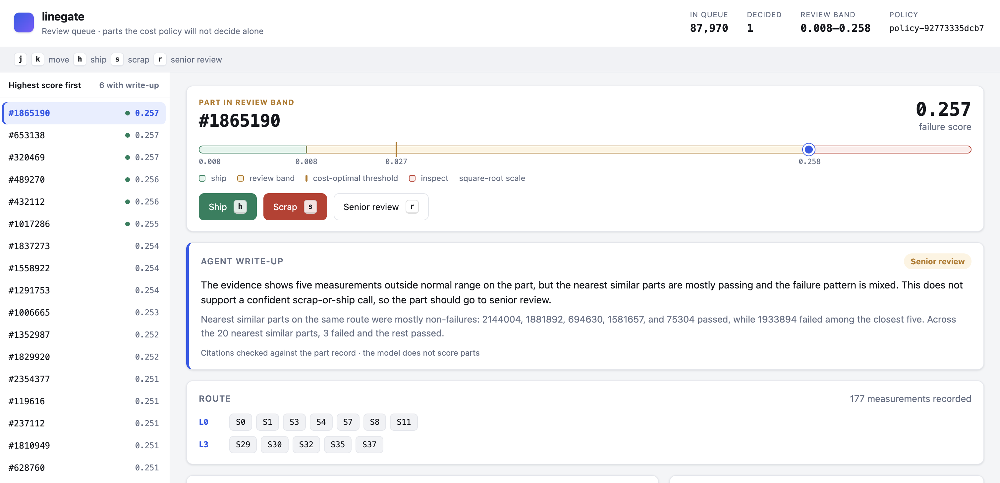
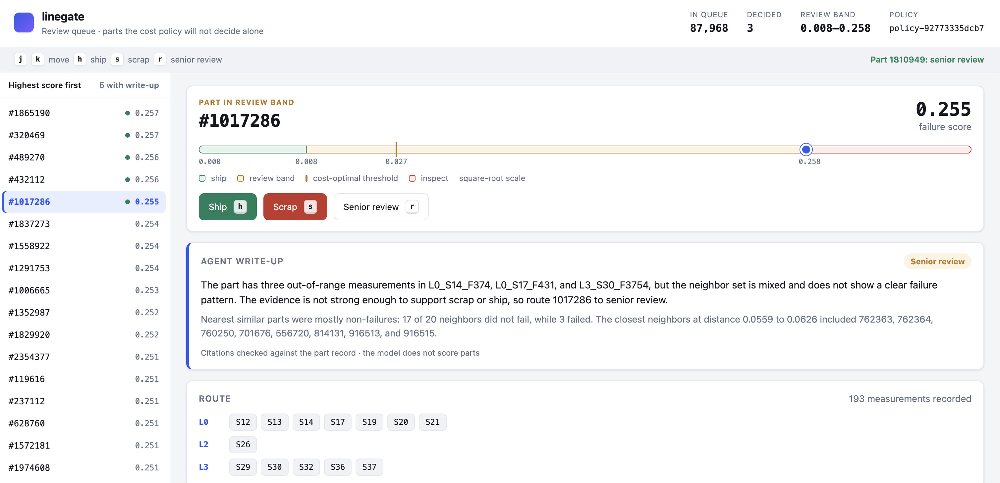

From prediction to better decisions.
An end-to-end ML system that turns production data into cost-based quality decisions—and gives engineers the evidence to review uncertain parts.

A model score. A clear next step.
Connect failure predictions to inspection costs, supporting evidence, and an engineer’s judgment.
*Offline holdout estimate versus shipping all parts, under project cost and volume assumptions. Not measured factory savings. See results and limitations →
Built for the person making the call.
A focused review workspace brings the model’s prediction and the part’s production history into one view.

Understand the recommendation
See the part’s score against ship, review, and inspect zones defined by the cost policy.
Inspect the supporting evidence
Follow the production route and read an agent summary whose citations are checked against returned evidence.
Make and record a decision
Ship, scrap, or escalate with keyboard actions. Confirmed decisions are stored as labels for future training.
View full-size console capture ↗System architecture
The decision path runs left to right: verified data, a LightGBM ensemble, a dollar-priced policy, and a review console. Agents sit above it and can only reach the model through the leakage warden.
A feature proposal, end to end
How an agent's idea becomes a scored feature, or a quarantine: parsed and dry-run SQL, a sandbox with one split and no labels, three leak tests, and an evaluation bar measured from placebo runs.
From raw sensor files to priced decisions
Hash-verified files become Parquet with proven row counts, split by production time. The holdout is sealed before any model exists and scored exactly once at the end.
Measured outcomes.
Documented tradeoffs.
This portfolio project uses historical Bosch competition data. The sealed holdout was evaluated once, and the findings include both the gains and the limitations.
Read the evaluation scorecard ↗Performance declined on later production data. No proposed feature cleared the noise-calibrated acceptance bar. Cost estimates evaluate the policy threshold, not realized savings from human review.